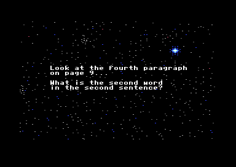
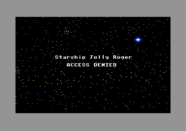

<meta charset="utf-8">
<meta name="viewport" content="width=device-width, initial-scale=1">
<title>Space Rogue</title>
<link rel="preconnect" href="https://fonts.googleapis.com">
<link rel="stylesheet" href="https://fonts.googleapis.com/css2?family=Lato:wght@400;700;900&family=IBM+Plex+Mono:wght@400;500&display=swap">
<style>
:root{
  --bg:#23262d; --paper:#e9e7e1; --surface:#ffffff; --surface-2:#f1efea; --line:#d5d3cc; --line-soft:#e0ded8;
  --ink:#2f3136; --ink-soft:#55585f; --ink-mute:#80838a;
  --link:#1f5fa8; --link-hover:#154480; --accent:#1f5fa8;
  --amber:#c25a00; --cyan:#1f5fa8; --coral:#d04a3a; --green:#2a8a4a; --violet:#4a5bd6; --hl:#fff0c2;
  --chip:#2f3136; --chip-ink:#ffffff;
  --c64blue:#40318d; --c64grey:#686868;
  --fd:'Lato',system-ui,sans-serif; --fb:'Lato',system-ui,sans-serif; --fm:'IBM Plex Mono',ui-monospace,Menlo,monospace;
  --col:1080px; --gx:68px; --fs:17px; --lh:1.6; --hw:900; --h1:46px; --h2:26px; --sy:48px; --pp:26px; --r:10px;
  --plate-shadow:0 1px 2px rgba(0,0,0,.05),0 4px 14px rgba(0,0,0,.05);
}
*{box-sizing:border-box}
html{background:var(--bg);min-height:100%}
body{background:var(--paper);color:var(--ink);font-family:var(--fb);font-size:var(--fs);line-height:var(--lh);max-width:var(--col);margin:0 auto;min-height:100vh;padding:0 0 4rem}
h1,h2,h3{font-weight:var(--hw);letter-spacing:-.01em;text-wrap:balance;color:var(--ink);margin:0}
.wrap{padding:0 var(--gx)}
.hero{padding:48px var(--gx) 8px;text-align:left}
.eyebrow{font-family:var(--fm);font-size:12px;letter-spacing:.08em;text-transform:uppercase;color:var(--ink-mute);margin:0 0 10px}
.hero h1{font-size:var(--h1);line-height:1.15;letter-spacing:-.02em;margin:0 0 14px}
.hero .sub{margin:0 0 .6em;color:var(--ink-soft)}
section{padding:var(--sy) 0 24px}
section:last-of-type{border-bottom:none}
.fig{font-family:var(--fm);font-size:12px;letter-spacing:.08em;text-transform:uppercase;color:var(--ink-mute);margin:0 0 10px}
h2.t{font-size:var(--h2);margin-bottom:12px}
.lede{color:var(--ink-soft);margin:0 0 30px}
.plate{background:var(--surface);border:1px solid var(--line);border-radius:var(--r);padding:var(--pp);box-shadow:var(--plate-shadow)}
.cap{font-size:14px;color:var(--ink-mute);margin-top:14px;line-height:1.55}
.cap b{color:var(--ink);font-weight:700}
code{font-family:var(--fm);font-size:.82em;background:var(--chip);color:var(--chip-ink);border-radius:4px;padding:2px 6px;white-space:nowrap}
.pick{display:flex;align-items:stretch;gap:6px;margin:0 0 12px;font-family:var(--fm);font-size:12.5px}
.pick select{flex:1;min-width:0;background:var(--surface);border:1px solid var(--line);color:var(--ink);padding:6px 8px;border-radius:6px;font:inherit}
.pick .step{flex:none;display:flex;align-items:center;justify-content:center;width:30px;border:1px solid var(--line);border-radius:6px;color:var(--ink-soft);background:var(--surface);text-decoration:none;font-size:16px;line-height:1;cursor:pointer}
.pick .step:hover{color:var(--ink);border-color:var(--ink-mute);text-decoration:none}
.pick .step.off{opacity:.35;cursor:default}
.pick select:focus-visible,.pick .step:focus-visible{outline:2px solid var(--accent);outline-offset:1px}
a{color:var(--link)}
a:hover{color:var(--link-hover)}
p{margin:0 0 1em}
table{border-collapse:collapse;font-size:15px;margin:0 0 1.2em;width:100%}
th,td{text-align:left;padding:6px 10px;border-bottom:1px solid var(--line-soft);vertical-align:top}
th{font-family:var(--fm);font-size:12px;letter-spacing:.04em;text-transform:uppercase;color:var(--ink-mute);font-weight:500}
.sr-scroll{overflow-x:auto}
.sr-scroll table{min-width:620px}
.sr-shots{display:grid;grid-template-columns:repeat(2,1fr);gap:14px}
.sr-shots img{width:100%;display:block;border-radius:6px;image-rendering:pixelated}
.sr-shots figcaption{font-size:13px;color:var(--ink-mute);margin-top:6px}
.sr-shots figure{margin:0}
.sr-bar{display:flex;flex-wrap:wrap;gap:8px 14px;align-items:center;margin:0 0 12px;font-size:14px;color:var(--ink-soft)}
.sr-bar label{display:flex;align-items:center;gap:8px}
.sr-bar input[type=range]{width:240px;max-width:60vw}
.sr-btn{font:inherit;font-size:12.5px;font-family:var(--fm);border:1px solid var(--line);border-radius:6px;background:var(--surface);color:var(--ink-soft);padding:4px 9px;cursor:pointer}
.sr-btn:hover{color:var(--ink);border-color:var(--ink-mute)}
.sr-btn[aria-pressed=true]{color:var(--ink);border-color:var(--accent);box-shadow:0 0 0 1px var(--accent)}
.sr-mono{font-family:var(--fm);font-size:12.5px;color:var(--ink)}
.sr-view{background:#000;border-radius:6px;overflow:hidden;line-height:0}
.sr-view canvas{display:block;width:100%;margin:0 auto;image-rendering:pixelated;image-rendering:crisp-edges}
.sr-info{font-size:14px;color:var(--ink-soft);min-height:3.2em;margin:10px 0 0}
.sr-info b{color:var(--ink)}
.sr-need{font-size:14px;color:var(--coral);margin:0 0 10px}
.sr-two{display:grid;grid-template-columns:1fr 1fr;gap:18px;align-items:start}
.sr-keys{outline:none}
.sr-keys:focus-visible{box-shadow:0 0 0 2px var(--accent);border-radius:var(--r)}
.sr-keys tr.sr-hit td{background:var(--hl)}
.sr-k{font-family:var(--fm);font-size:12px;border:1px solid var(--line);border-radius:4px;padding:1px 6px;margin:0 3px 3px 0;display:inline-block;background:var(--surface-2);white-space:nowrap}
.sr-odds td.sr-pc{font-family:var(--fm);font-size:12.5px;white-space:nowrap;width:5em}
.sr-odds td.sr-barcell{width:55%}
.sr-odds i{display:block;height:12px;background:var(--accent);border-radius:2px;min-width:1px}
.sr-bits{font-family:var(--fm);font-size:12.5px;line-height:1.9;word-break:break-all;color:var(--ink)}
.sr-bits span{border-bottom:2px solid var(--line);margin-right:1px}
.sr-bits span:nth-child(odd){border-color:var(--accent)}
.sr-code td{font-family:var(--fm);font-size:12.5px;padding:3px 8px}
.sr-codes{columns:3 200px;column-gap:20px;font-family:var(--fm);font-size:12.5px;margin:12px 0 0}
.sr-codes div{break-inside:avoid;display:flex;gap:10px;padding:1px 0}
.sr-codes b{display:inline-block;min-width:3.6em;font-weight:500}
.sr-input{width:100%;font:inherit;font-size:15px;padding:7px 10px;border:1px solid var(--line);border-radius:6px;background:var(--surface);color:var(--ink);margin:0 0 10px}
.sr-q{font-size:18px;margin:6px 0 10px}
.sr-q b{font-family:var(--fm);font-size:16px}
details summary{cursor:pointer;color:var(--link);font-size:14px;margin:12px 0 6px}
@media (max-width:760px){:root{--gx:20px;--pp:16px}.sr-two,.sr-shots{grid-template-columns:1fr}}
.sr-lab{display:block;font-size:14px;color:var(--ink-soft);margin:0 0 6px}
.sr-fig{margin:0}
.sr-fig figcaption{font-size:13px;color:var(--ink-mute);margin-top:6px}
.sr-gap{margin-top:12px}
.sr-code{width:auto;margin:0}
.sr-code tr.sr-hot td{background:var(--hl)}
.sr-code tr.sr-sep td{border:none;height:10px}
.sr-code td{white-space:nowrap}
.sr-chart{display:block;width:100%;height:auto}
.sr-key{font-size:13px;color:var(--ink-soft);margin:8px 0 0;display:flex;align-items:center;gap:8px}
.sr-sw{display:inline-block;width:12px;height:12px;border-radius:2px}
.sr-lamp{display:inline-block;width:18px;height:18px;border-radius:50%;background:#3a3a3a;box-shadow:inset 0 0 0 2px rgba(0,0,0,.25)}
.sr-lamp.on{background:#ffd23a;box-shadow:0 0 10px #ffd23a}
</style>
<!-- tabs -->
<header class="hero">
  <p class="eyebrow">1989 · Origin Systems</p>
  <h1>Space Rogue</h1>
  <p class="sub">What the code does that the game never tells the player. The answer typed to the copy protection is written into the picture behind it, and the beeps at the start of the story are a message in Morse.</p>
</header>
<main class="wrap">

<section data-part="intro" id="answer">
  <p class="fig">01 · The manual question</p>
  <h2 class="t">Bug: the answer you type is stored inside the star field's picture</h2>
  <p class="lede">An old game starts with a question about the manual. A wrong answer brings back the star field with "ACCESS DENIED" over it, and that star field is not quite the one the question was asked over.</p>
  <div class="plate">
    <label class="sr-lab" for="sr-ans">Type an answer</label>
    <input class="sr-input" id="sr-ans" maxlength="16" value="zz" autocomplete="off" spellcheck="false" aria-describedby="sr-ans-info">
    <p class="sr-need" id="sr-ans-need" hidden></p>
    <div class="sr-two">
      <figure class="sr-fig"><div class="sr-view"><canvas id="sr-ans-before" width="352" height="232"></canvas></div><figcaption>The question's star field</figcaption></figure>
      <figure class="sr-fig"><div class="sr-view"><canvas id="sr-ans-after" width="352" height="232"></canvas></div><figcaption id="sr-ans-cap">After the answer</figcaption></figure>
    </div>
    <div class="sr-bar sr-gap"><button class="sr-btn" id="sr-ans-mark" aria-pressed="true">Outline what changed</button></div>
    <p class="sr-info" id="sr-ans-info"></p>
    <p class="cap">Both pictures are unpacked here from <code data-part="title">SPACE</code> as the title holds it (<code data-part="title">$B700</code>), with <code>unpack_picture</code>'s rules (<code>$712D</code>); the text over them is left out. <code>test_discoveries.js</code> runs the game's own routine on the same bytes and gets the same picture and border.</p>
  </div>
  <p>The intro loads the packed star field, <code>SPACE</code>, to <code>$B700</code>, where its stream runs on to <code>$BF53</code>. The buffer for a typed line is at <code>$BF00</code> (<code>line_buffer</code>), inside that stream. The question is asked over the star field unpacked before anything is typed. A wrong answer sends the game to <code>access_denied</code> (<code>$7927</code>), which unpacks <code>SPACE</code> again, now with the answer and the zero that closes it written over the stream 84 bytes before its end.</p>
  <p>Those bytes unpack into the lower half of the screen matrix, which holds two of the four colours of each character cell. The unpacker reads the typed letters as counts and colours, so cells there change colour. When it reads the answer's closing zero as a control byte, the picture ends early and the rest of the screen keeps the question's colours. The byte after the end marker is the border colour, so a wrong answer can also turn the border blue or grey.</p>
  <div class="sr-shots">
    <figure><figcaption>The question, in VICE.</figcaption></figure>
    <figure><figcaption>The same game after the answer "zz": the border is grey and a band of stars is yellow and red.</figcaption></figure>
  </div>
  <p class="cap">Seen in VICE (PAL C64) on 15 October 2026. The buffer the screen showed matched the page's prediction for "zz" byte for byte, except under the two lines of text.</p>
</section>

<section data-part="intro" id="hang">
  <p class="fig">02 · The interrupt</p>
  <h2 class="t">Bug: the game can freeze at "Old or New Game?"</h2>
  <p class="lede">The title, the intro and the ending each switch the screen to a bitmap with one routine, <code>bitmap_mode</code>. Called at the wrong moment of the frame, it moves the raster interrupt to a line the video chip never draws, and the game freezes.</p>
  <div class="plate">
    <div class="sr-bar">
      <span role="group" aria-label="Video standard" id="sr-ras-std"><button class="sr-btn" data-std="312" aria-pressed="true">PAL</button> <button class="sr-btn" data-std="263" aria-pressed="false">NTSC</button></span>
      <label>The beam is on line <input type="range" id="sr-ras-line" min="0" max="311" value="280" aria-label="The line the beam is on when bitmap_mode runs"></label><span class="sr-mono" id="sr-ras-v"></span>
    </div>
    <canvas id="sr-ras-cv" class="sr-chart" width="720" height="120" aria-label="The frame's lines from top to bottom, the beam and the line the interrupt waits for"></canvas>
    <div class="sr-two sr-gap">
      <p class="sr-info" id="sr-ras-info"></p>
      <table class="sr-code" id="sr-ras-code"></table>
    </div>
    <p class="cap">The code is <code>bitmap_mode</code> in the intro (<code>$6FD7</code>); the title's (<code data-part="title">$2823</code>) and the ending's (<code data-part="ending">$6FE2</code>) are the same. <code>test_discoveries.js</code> runs it with the beam on every line of a PAL frame.</p>
  </div>
  <p>The routine sets the bitmap bit with three instructions: read the control register <code data-part="">$D011</code>, set bit 5, write it back. Bit 7 of that register means two different things. Read, it is bit 8 of the line the beam is drawing. Written, it is bit 8 of the line the raster interrupt waits for, whose low byte stays at <code>$50</code>. When the routine runs while the beam is on line 256 or any later line, the interrupt moves from line 80 to line 336.</p>
  <p>A PAL frame has 312 lines and an NTSC frame 263, so line 336 never comes. The game reads the keyboard and counts frames in that interrupt, and it waits there for a key that can no longer arrive. Lines 256 to 311 are 56 of PAL's 312, so a call landing at a random moment hangs about one time in six on a PAL machine, and on NTSC (7 lines of 263) about one time in 38.</p>
  <p class="cap">Seen in VICE (PAL C64): two clean boots out of two hung at "Old or New Game?", the interrupt stopped. Clearing bit 7 of <code data-part="">$D011</code> with the machine paused brought it back each time.</p>
</section>

<section data-part="hive" id="mounds">
  <p class="fig">03 · HIVE!</p>
  <h2 class="t">Bug: HIVE! raises mounds at full speed from the first drop</h2>
  <p class="lede">The arcade game in the cantinas raises a new Manchi mound after a random wait, and the code means that wait to shorten on later drops. A branch that tests the wrong way round keeps the shortest wait from drop 1.</p>
  <div class="plate">
    <div class="sr-bar"><label>Drop <input type="range" id="sr-mnd-drop" min="1" max="40" value="1" aria-label="The combat drop"></label><span class="sr-mono" id="sr-mnd-v"></span></div>
    <canvas id="sr-mnd-cv" class="sr-chart" width="680" height="300" aria-label="Every wait the code can choose on each drop, meant and actual"></canvas>
    <p class="sr-key"><span class="sr-sw" style="background:var(--accent)"></span>meant <span class="sr-sw" style="background:var(--coral)"></span>what the code does</p>
    <p class="sr-info" id="sr-mnd-info"></p>
    <table class="sr-code" id="sr-mnd-code"></table>
    <p class="cap">Every wait the code can choose for each drop, one mark for each of random_upto's 91 results. "Meant" runs the same code with the branch the other way round. <code>test_discoveries.js</code> runs <code>hive_raise_mound</code> for every drop from 0 to 255 and every result.</p>
  </div>
  <p>When a mound rises (<code>hive_raise_mound</code>, <code>$59BA</code>), the timer for the next one is set from the drop number: 150 − 8 × drop, plus a random 0 to 90. The subtraction is done in one byte. The branch at <code>$59E4</code> keeps its result only when the subtraction borrows, that is when it goes below zero, and otherwise puts 1 in its place. Up to drop 18 the result is never below zero, so every drop gets the shortest wait the code allows: on drop 1 the mounds come about four times as often as the code was written to allow, and by drop 18 the two nearly agree.</p>
  <p>From drop 19 the subtraction does borrow, and the code keeps a number that has wrapped round to just under 256: the waits split between a very short one and one of over 150 passes. At drop 32, 8 × 32 is 256, which is 0 in one byte, and the pattern starts again. The timer counts passes of the drop's loop, twice as fast while there are no mounds standing.</p>
</section>

<section data-part="intro" id="morse">
  <p class="fig">04 · The distress call</p>
  <h2 class="t">Secret: the distress call's Morse says PLAY ULTIMA</h2>
  <p class="lede">The story opens with the Princess Blue picking up a distress beacon, and the first page plays it as beeps. They are Morse code: SOS SOS PLAY ULTIMA SOS SOS.</p>
  <div class="plate">
    <div class="sr-bar"><button class="sr-btn" id="sr-mor-go" aria-pressed="false">Send it</button><span class="sr-lamp" id="sr-mor-lamp" aria-hidden="true"></span><span class="sr-mono" id="sr-mor-v"></span></div>
    <p class="sr-need" id="sr-mor-need" hidden></p>
    <canvas id="sr-mor-cv" class="sr-chart" width="680" height="228" aria-label="The beacon's tones and silences in frames, by letter"></canvas>
    <p class="cap">Decoded from <code>morse_text</code> (<code>$7397</code>), each character drawn to scale in frames, a fiftieth of a second on a PAL machine; the lamp sends it at that speed. <code>test_discoveries.js</code> runs <code>distress_call</code> (<code>$7359</code>) and compares every tone and silence with this timeline.</p>
  </div>
  <p>The message is 86 bytes, one for each dot, dash and gap: a dot is a 2-frame tone, a dash a 6-frame tone, each followed by 2 frames of silence. Between letters the gap is 6 frames, but inside SOS it is only 4, so each SOS runs together as one signal, the way radio operators send it. Words are 18 frames apart. The story text calls the beacon a distress call and says nothing about what it spells. None of the sources read for this page mentions the message (the C64-Wiki's page and the QuestBusters review of November 1989).</p>
</section>

<section data-part="engine" id="ja-karn">
  <p class="fig">05 · The ninth system</p>
  <h2 class="t">Secret: there is no Malir gate that leads to Ja-Karn</h2>
  <p class="lede">Side 2 of the disks holds nine system maps, and the ninth, Ja-Karn, is the Manchi's. Its map does not list any gates, and none of the other eight systems have a gate leading to it.</p>
  <p>A gate is a map entry of type <code>$14</code> whose extra byte points into four-byte records at <code data-part="nav">$5630</code>: the system it leads to, the sector it arrives in and the rings the jump must pass (<code>gate_jump</code>, <code>$7134</code>). The gates of Karonus to Zed N27 lead only among those eight, Deneb and Bassruti with four each. The map loader takes the system's digit from <code>$071D</code> (<code>load_system_map</code>, <code>$2E7A</code>), so the only way to Ja-Karn, the file <code>Q9</code>, is for something to set it to 9: one of the talk scripts does, with a plot flag, and sends the ship to sector 0, 0 (station <code data-part="station">talk_end</code>, <code data-part="station">$E7C7</code>). Docking anywhere in Ja-Karn wins the game (<code>dock</code>, <code>$7094</code>).</p>
  <p>Ja-Karn's danger is 85, the highest of the nine, where the others run from 30 to 53, and all its ship class weight is on one class, which <a href="ships.html#encounters">Ships and combat</a> shows as Wasps and Vultures. <a href="levels.html#systems">Maps</a> draws it with the other eight.</p>
</section>

<section data-part="station" id="lock">
  <p class="fig">06 · Picking locks</p>
  <h2 class="t">Bug: picking a lock with anyone in sight always gets you caught</h2>
  <p class="lede">A locked door or a safe in a base can be picked. With nobody about, the lock opens one time in three. The code meant to give the player an even chance of not being noticed when someone is in sight, and gives none.</p>
  <div class="plate">
    <table class="sr-code" id="sr-lock-code"></table>
    <p class="cap"><code>pick_lock</code> (<code>$B79E</code>) and the first instruction of the engine's random number routine (<code data-part="engine">random</code>, <code data-part="engine">$A2C5</code>), from the listings.</p>
  </div>
  <p>After <code>find_watcher</code> finds someone in view, the test is <code>LDA random</code> and a branch if the result is positive. <code>LDA</code> reads the byte at the routine's address instead of calling it, and that byte is <code>$AD</code>, the routine's own first instruction. <code>$AD</code> has its top bit set, so the branch is never taken and the alarm goes every time. With the intended <code>JSR</code>, a random byte would have let the attempt go ahead half the time.</p>
</section>

<section data-part="engine" id="joysticks">
  <p class="fig">07 · Controls</p>
  <h2 class="t">Secret: a second joystick sets the speed</h2>
  <p class="lede">Flight reads both joystick ports. The stick in port 2 steers and fires; pushing the stick in port 1 forward or back changes the set speed, as + and − do.</p>
  <p><code>joystick_speed</code> (<code>$242C</code>) reads port 1's up and down lines and moves the set speed a step for each push, refusing to take it past zero in one push. None of the sources read for this page mentions a second joystick.</p>
</section>

<section data-part="title" id="pause">
  <p class="fig">08 · Pauses</p>
  <h2 class="t">Bug: every pause lasts 0.86 seconds, whatever length is asked for</h2>
  <p class="lede">The title, the intro and the ending wait between their pictures with the same routine, <code>pause</code> (<code>$20E0</code>), which is passed the length of the wait in A.</p>
  <p>The routine first clears any key waiting, and the routine that does that leaves A at <code>$FF</code>. The length the caller passed is gone before the loop starts, so every pause runs its 26-cycle loop 32,640 times, about 0.86 seconds. The credits stay up for 24 pauses, about 21 seconds (<code>show_credits</code>, <code>$2D84</code>).</p>
</section>

<section data-part="ending" id="truce">
  <p class="fig">09 · The ending</p>
  <h2 class="t">Bug: the truce page starts a row lower than the others</h2>
  <p class="lede">The ending tells its story in pages of text over three pictures. The page that says "Peace is at hand." begins one row lower than the rest.</p>
  <p><code>story_truce</code> (<code>$78F7</code>) sets only the cursor's row. The six full lines of the page before left the column past the window's right edge, so the truce's first character starts a new line.</p>
</section>

<section data-part="engine" id="manchi">
  <p class="fig">10 · The Manchi</p>
  <h2 class="t">Secret: the Manchi's opinion of you is the beam's ammunition count</h2>
  <p class="lede">The player has a standing with each faction, from −2 to 2, and a computer ship treats the player by its faction's standing. The Manchi's standing is the same byte as the beam weapon's ammunition count, which never goes down, and the count reads as hostile.</p>
  <p>The standings are the bytes from <code>$072E</code>, one for each faction by its number, and <code>faction_attitude</code> (<code>$387E</code>) reads <code>$072E</code> plus the faction when a ship looks at the player. The weapons' counts start at <code>$0731</code>, one for each weapon in the order R selects them: the beam, then the SM-1, Nova and plasma torpedo missiles carried. The Manchi are faction 3, so their standing is <code>$0731</code>, where the beam's count is <code>$FE</code>, which as a standing is −2, hostile. A launch uses up a missile, but the beam's count is never touched, and <code>change_standing</code> (<code>$3C90</code>), which a kill calls, leaves faction 3 alone. The byte stays <code>$FE</code> for the whole game.</p>
  <p>The Manchi are the game's enemy, so the effect is what the story wants: they attack the player on sight, as they do in a fight on <a href="ships.html#combat">Ships and combat</a> with the Manchi box ticked.</p>
</section>

</main>

<script type="application/json" data-listing="parts/title/listing.json">["$B700-$BFFF"]</script>
<script type="application/json" data-listing="parts/intro/listing.json" data-fields="m o">["$6FD7-$6FFF", "$7397-$73F2"]</script>
<script type="application/json" data-listing="parts/hive/listing.json" data-fields="m o">["$59D8-$59F2"]</script>
<script type="application/json" data-listing="parts/station/listing.json" data-fields="m o">["$B79E-$B7AD"]</script>
<script type="application/json" data-listing="parts/engine/listing.json" data-fields="m o">["$A2C5-$A2C7"]</script>
<script src="../../lib/c64.js"></script>
<script>
/* sr-unpack */
// unpack_picture, the intro's ($712D; the title's, the ending's and the engine's, $1C1D, read the
// same stream). src holds the packed picture from index at. A byte n below $80 repeats the byte
// after it n times; $80 + n copies the n bytes after it ($80 alone copies 256 and then moves on
// by the control byte only, as the routine's 8-bit counts do); 0 ends the picture, and the byte
// after it is the border colour, which the intro's routine also stores, a byte past the end of
// what it unpacked (its Y is 1 by then). limit, when given, stops after that many bytes of the
// stream, for a picture half unpacked; a stream that runs past the end of src stops there, where
// the game would read on into whatever memory follows.
// Returns the 10 KB the stream fills (the bitmap, the screen matrix at +$2000, the colours at
// +$2400), the border (-1 if the stream was cut short), where the stream ended, how much it wrote
// (the game writes on past 10 KB; out keeps the first 10 KB) and whether it ran out of src.
function unpackPicture(src, at, limit) {
  const out = new Uint8Array(0x2800);
  let s = at, d = 0, border = -1, over = false;
  for (;;) {
    if (limit !== undefined && s - at >= limit) break;
    if (s >= src.length) { over = true; break; }
    const c = src[s];
    if (c === 0) { border = src[s + 1]; out[d + 1] = border; s += 2; break; }
    if (c < 0x80) {
      for (let i = 0; i < c; i++) out[d + i] = src[s + 1];
      s += 2; d += c;
    } else {
      const n = (c & 0x7F) || 256;
      for (let i = 0; i < n; i++) out[d + i] = src[s + 1 + i];
      s += 1 + (n & 255); d += n & 255;
    }
  }
  return { out, border, end: s - at, size: d, over };
}
// The picture on the screen: a multicolour bitmap, %00 the background (black), %01 and %10 the
// screen matrix's nybbles, %11 the colour RAM: the picture's own colours (the intro and the
// ending copy them there, colours_to_ram, $718B) or white, which the title and the engine leave
// in colour RAM. Returns 320 x 200 palette indexes.
function pictureColours(out, own) {
  const px = new Uint8Array(320 * 200);
  for (let cy = 0; cy < 25; cy++)
    for (let cx = 0; cx < 40; cx++) {
      const i = cy * 40 + cx, scr = out[0x2000 + i];
      const cols = [0, scr >> 4, scr & 15, own ? out[0x2400 + i] & 15 : 1];
      for (let line = 0; line < 8; line++) {
        const v = out[cy * 320 + cx * 8 + line];
        for (let p = 0; p < 4; p++) {
          const c = cols[(v >> (6 - 2 * p)) & 3], o = (cy * 8 + line) * 320 + cx * 8 + p * 2;
          px[o] = px[o + 1] = c;
        }
      }
    }
  return px;
}
// end of sr-unpack
/* sr-denied */
// What access_denied ($7927) shows after a wrong answer. space is SPACE, the packed star field, as
// it is loaded to $B700 (the title's copy: the intro's own is the same until something is typed).
// The question is asked over space unpacked as it is. The answer's characters, ASCII as read_line
// ($7488) stores them, and the zero that closes them go to line_buffer, $BF00, which is space's
// byte $800. access_denied then unpacks the changed stream into the buffer the question was shown
// in: the unpacker writes only as far as the stream goes, and the question's picture stays past
// that, with the border byte stored a byte past the end as unpack_picture does. Returns both 10 KB
// buffers, the border each picture sets and the counts.
function deniedPicture(space, answer) {
  const before = unpackPicture(space, 0);
  const s = space.slice();
  for (let i = 0; i < answer.length; i++) s[0x800 + i] = answer.charCodeAt(i) & 0xFF;
  s[0x800 + answer.length] = 0;
  const p = unpackPicture(s, 0), out = before.out.slice();
  for (let i = 0; i < Math.min(p.size, 0x2800); i++) out[i] = p.out[i];
  if (p.size + 1 < 0x2800) out[p.size + 1] = p.border;
  return { before: before.out, beforeBorder: before.border, out, border: p.border,
           end: p.end, beforeEnd: before.end, size: p.size, beforeSize: before.size };
}
// end of sr-denied
/* sr-raster */
// bitmap_mode (intro $6FD7) turns the bitmap on with LDA $D011, ORA #$20, STA $D011. Read, bit 7
// of $D011 is bit 8 of the line the beam is on; written, it is bit 8 of the line the raster
// interrupt waits for, whose low byte, $50, stays in $D012. Returns that line after a call made
// while the beam is on line beam.
function rasterAfter(beam) {
  const read = ((beam & 0x100) >> 1) | 0x1B, written = read | 0x20;
  return ((written & 0x80) << 1) | 0x50;
}
// end of sr-raster
/* sr-mound */
// hive_raise_mound ($59D8-$59F1): the wait, in passes, before the next mound on drop L, for the
// random number r from 0 to 90 that random_upto picks. The code works out 150 - 8 x L in 8 bits
// and keeps it only when the subtraction borrows (the BCC at $59E4); otherwise the wait starts
// from 1. intended keeps it when it does not borrow, as the code was meant to. The ADC that adds r
// takes random_upto's carry, set only when r is 90 (its last CMP found them equal), and the sum is
// 8 bits too.
function moundWait(L, r, intended) {
  const d = 150 - ((8 * L) & 255), borrow = d < 0;
  const base = borrow !== !!intended ? d & 255 : 1;
  return (base + r + (r === 90 ? 1 : 0)) & 255;
}
// end of sr-mound
/* sr-morse */
// The distress call, distress_call ($7359): each byte of morse_text ($7397, up to its zero) picks
// an element from morse_symbols, each a tone and a silence in frames: $AE a dot (2 + 2), $AD a
// dash (6 + 2), $A0 the gap between letters (6 of silence), $A7 the shorter gap inside SOS (4) and
// $AF the gap between words (18). Returns the elements in order as { on, frames } runs, and the
// letters, each with the frame it starts on and the word it belongs to.
function morseTimeline(bytes) {
  const CODE = { '.-': 'A', '-...': 'B', '-.-.': 'C', '-..': 'D', '.': 'E', '..-.': 'F', '--.': 'G', '....': 'H', '..': 'I',
    '.---': 'J', '-.-': 'K', '.-..': 'L', '--': 'M', '-.': 'N', '---': 'O', '.--.': 'P', '--.-': 'Q', '.-.': 'R', '...': 'S',
    '-': 'T', '..-': 'U', '...-': 'V', '.--': 'W', '-..-': 'X', '-.--': 'Y', '--..': 'Z' };
  const runs = [], letters = [];
  let t = 0, sym = '', start = 0, word = 0;
  const run = (on, n) => { runs.push({ on, frames: n, at: t }); t += n; };
  const close = () => { if (sym) letters.push({ ch: CODE[sym] || '?', code: sym, at: start, end: t, word }); sym = ''; };
  for (let i = 0; i < bytes.length && bytes[i]; i++) {
    const b = bytes[i];
    if (b === 0xAE || b === 0xAD) { if (!sym) start = t; sym += b === 0xAE ? '.' : '-'; run(true, b === 0xAE ? 2 : 6); run(false, 2); }
    else { close(); run(false, b === 0xA0 ? 6 : b === 0xA7 ? 4 : 18); if (b === 0xAF) word++; }
  }
  close();
  return { runs, letters, frames: t };
}
// end of sr-morse
(function () {
  'use strict';
  const $ = id => document.getElementById(id);
  const PAL = ['#000000', '#ffffff', '#813338', '#75cec8', '#8e3c97', '#56ac4d', '#2e2c9b', '#edf171',
               '#8e5029', '#553800', '#c46c71', '#4a4a4a', '#7b7b7b', '#a9ff9f', '#706deb', '#b2b2b2'];
  const NAMES = ['black', 'white', 'red', 'cyan', 'purple', 'green', 'blue', 'yellow', 'orange', 'brown', 'light red', 'dark grey', 'grey', 'light green', 'light blue', 'light grey'];
  const RGB = PAL.map(h => [1, 3, 5].map(i => parseInt(h.substr(i, 2), 16)));
  const hx = (n, w) => '$' + n.toString(16).toUpperCase().padStart(w || 2, '0');
  const css = v => getComputedStyle(document.documentElement).getPropertyValue(v).trim();
  const NEED = 'This widget draws from the game\'s bytes with the site\'s shared script, ../../lib/c64.js: open the page from the built site.';
  const need = (id, msg) => { const p = $(id); p.textContent = msg || NEED; p.hidden = false; };
  const pressed = (group, btn) => group.querySelectorAll('[aria-pressed]').forEach(b => b.setAttribute('aria-pressed', b === btn ? 'true' : 'false'));

  raster(); mounds();
  if (!window.C64) { ['sr-ans-need', 'sr-mor-need'].forEach(id => need(id)); return; }
  const URLS = ['parts/title/listing.json', 'parts/intro/listing.json', 'parts/hive/listing.json', 'parts/station/listing.json', 'parts/engine/listing.json'];
  Promise.all(URLS.map(u => C64.load(u))).then(([T, I, H, S, E]) => {
    code($('sr-ras-code'), I, 0x6FD7, 0x6FE7, [0x6FE0, 0x6FE3, 0x6FE5]);
    code($('sr-mnd-code'), H, 0x59D8, 0x59F1, [0x59E4]);
    code($('sr-lock-code'), S, 0xB79E, 0xB7AD, [0xB7A3, 0xB7A6]);
    code($('sr-lock-code'), E, 0xA2C5, 0xA2C5, [0xA2C5], true);
    answer(T); morse(I);
  }, () => ['sr-ans-need', 'sr-mor-need'].forEach(id => need(id, 'The listings this widget reads come with the built site: open the page from there.')));

  // A listing's instructions from lo to hi, those in hot marked
  function code(table, L, lo, hi, hot, more) {
    if (more) { const tr = table.insertRow(); tr.className = 'sr-sep'; tr.insertCell().colSpan = 4; }
    for (const r of L.listing.records) {
      if (r.a < lo || r.a > hi || r.t !== 'code') continue;
      const tr = table.insertRow();
      if (hot.includes(r.a)) tr.className = 'sr-hot';
      tr.insertCell().textContent = hx(r.a, 4);
      tr.insertCell().textContent = (r.b || []).map(b => b.toString(16).toUpperCase().padStart(2, '0')).join(' ');
      tr.insertCell().textContent = r.l || '';
      tr.insertCell().textContent = (r.m || '') + (r.o ? ' ' + r.o : '');
    }
  }

  // ---- 01 the answer
  function answer(T) {
    const space = T.ram.slice(0xB700, 0xC000), inp = $('sr-ans'), mark = $('sr-ans-mark');
    const before = $('sr-ans-before').getContext('2d'), after = $('sr-ans-after').getContext('2d');
    let outline = true;
    function paint(ctx, out, border, changed) {
      const px = pictureColours(out, false), img = ctx.createImageData(352, 232), b = RGB[border & 15];
      for (let i = 0; i < 352 * 232; i++) { img.data[i * 4] = b[0]; img.data[i * 4 + 1] = b[1]; img.data[i * 4 + 2] = b[2]; img.data[i * 4 + 3] = 255; }
      for (let y = 0; y < 200; y++)
        for (let x = 0; x < 320; x++) {
          const c = RGB[px[y * 320 + x]], o = ((y + 16) * 352 + x + 16) * 4;
          img.data[o] = c[0]; img.data[o + 1] = c[1]; img.data[o + 2] = c[2];
        }
      ctx.putImageData(img, 0, 0);
      if (!changed) return;
      ctx.strokeStyle = '#ff2fd0'; ctx.lineWidth = 1;
      for (const i of changed) ctx.strokeRect(16 + (i % 40) * 8 + .5, 16 + (i / 40 | 0) * 8 + .5, 7, 7);
    }
    function go() {
      const a = inp.value.replace(/[^\x20-\x7e]/g, '').slice(0, 16);
      if (!a) { $('sr-ans-info').textContent = 'The game takes RETURN only after at least one character.'; return; }
      const d = deniedPicture(space, a);
      const cells = [];
      for (let i = 0; i < 1000; i++) {
        let same = d.out[0x2000 + i] === d.before[0x2000 + i];
        for (let y = 0; y < 8 && same; y++) same = d.out[(i / 40 | 0) * 320 + (i % 40) * 8 + y] === d.before[(i / 40 | 0) * 320 + (i % 40) * 8 + y];
        if (!same) cells.push(i);
      }
      paint(before, d.before, d.beforeBorder, null);
      paint(after, d.out, d.border, outline ? cells : null);
      $('sr-ans-cap').textContent = 'After "' + a + '"';
      const bytes = [...a].map(c => hx(c.charCodeAt(0))).concat(['$00']).join(' ');
      const ended = d.end < d.beforeEnd ? ', and a zero in the changed bytes ends the picture ' + (d.beforeEnd - d.end) + ' bytes early' : '';
      $('sr-ans-info').innerHTML = '<b>' + bytes + '</b> at <code>$BF00</code>: the stream now reads ' + d.end.toLocaleString('en') + ' bytes where it read ' +
        d.beforeEnd.toLocaleString('en') + ended + '. ' + (cells.length ? cells.length + ' character cell' + (cells.length > 1 ? 's' : '') + ' change colour' : 'No cell changes') +
        '; the border is ' + NAMES[d.border & 15] + (d.border === d.beforeBorder ? ', as before.' : ' instead of ' + NAMES[d.beforeBorder & 15] + '.');
    }
    inp.addEventListener('input', go);
    mark.addEventListener('click', () => { outline = !outline; mark.setAttribute('aria-pressed', outline); go(); });
    go();
  }

  // ---- 02 the raster interrupt
  function raster() {
    const cv = $('sr-ras-cv'), ctx = cv.getContext('2d'), sl = $('sr-ras-line'), std = $('sr-ras-std');
    let lines = 312;
    function draw() {
      const beam = +sl.value, irq = rasterAfter(beam), X = n => 20 + n * 2, Y0 = 42, BH = 30;
      ctx.clearRect(0, 0, cv.width, cv.height);
      ctx.font = '12px ' + (css('--fm') || 'monospace'); ctx.textBaseline = 'middle';
      ctx.fillStyle = css('--surface-2'); ctx.fillRect(X(0), Y0, lines * 2, BH);
      ctx.fillStyle = '#40318d'; ctx.fillRect(X(51), Y0, 400, BH);
      ctx.fillStyle = 'rgba(208,74,58,.3)'; ctx.fillRect(X(256), Y0, (lines - 256) * 2, BH);
      ctx.strokeStyle = css('--line'); ctx.lineWidth = 1; ctx.strokeRect(X(0) + .5, Y0 + .5, lines * 2, BH);
      ctx.fillStyle = css('--ink-mute'); ctx.textAlign = 'left'; ctx.fillText('line 0', X(0), Y0 + BH + 12);
      ctx.textAlign = 'right'; ctx.fillText('line ' + (lines - 1), X(lines), Y0 + BH + 12);
      ctx.textAlign = 'center'; ctx.fillStyle = '#ffffff'; ctx.fillText('picture', X(151), Y0 + BH / 2);
      const mark = (n, col, label, below, dash) => {
        const x = X(n) + .5;
        ctx.strokeStyle = col; ctx.lineWidth = 2; ctx.setLineDash(dash ? [4, 3] : []);
        ctx.beginPath(); ctx.moveTo(x, Y0 - 8); ctx.lineTo(x, Y0 + BH + 8); ctx.stroke(); ctx.setLineDash([]);
        ctx.fillStyle = col; ctx.textAlign = n > lines - 60 ? 'right' : n < 40 ? 'left' : 'center';
        ctx.fillText(label, x + (ctx.textAlign === 'right' ? 4 : 0), below ? Y0 + BH + 30 : Y0 - 18);
      };
      mark(beam, css('--amber'), 'the beam, line ' + beam, false);
      mark(0x50, css('--accent'), 'interrupt before: line 80', true);
      if (irq !== 0x50) mark(irq, css('--coral'), 'interrupt after: line ' + irq, true, true);
      $('sr-ras-v').textContent = 'line ' + beam;
      const bit = beam > 255 ? 1 : 0;
      $('sr-ras-info').innerHTML = 'Bit 7 of <code data-part="">$D011</code> reads <b>' + bit + '</b>. Written back with bit 5 set, it puts the interrupt on line <b>' + irq + '</b>' +
        (irq === 0x50 ? ', where it was: the game goes on.' : ', past the last line of the frame (' + (lines - 1) + '): the interrupt never comes again, and the game waits for a key forever.');
    }
    std.querySelectorAll('button').forEach(b => b.addEventListener('click', () => {
      pressed(std, b); lines = +b.dataset.std; sl.max = lines - 1; if (+sl.value > lines - 1) sl.value = lines - 1; draw();
    }));
    sl.addEventListener('input', draw);
    draw();
  }

  // ---- 03 the mounds
  function mounds() {
    const cv = $('sr-mnd-cv'), ctx = cv.getContext('2d'), sl = $('sr-mnd-drop');
    const W = v => v || 256;                        // a timer of 0 counts 256 passes
    const L0 = 46, T0 = 12, H = 256, CW = 15.5;
    function stats(L, meant) {
      const v = []; for (let r = 0; r <= 90; r++) v.push(W(moundWait(L, r, meant)));
      const lo = Math.min(...v), hi = Math.max(...v), mean = v.reduce((a, b) => a + b, 0) / v.length;
      return { v, lo, hi, mean };
    }
    function draw() {
      const D = +sl.value;
      ctx.clearRect(0, 0, cv.width, cv.height);
      ctx.font = '11px ' + (css('--fm') || 'monospace'); ctx.textBaseline = 'middle';
      ctx.fillStyle = css('--hl'); ctx.fillRect(L0 + (D - 1) * CW, T0, CW, H);
      ctx.strokeStyle = css('--line-soft'); ctx.fillStyle = css('--ink-mute'); ctx.lineWidth = 1;
      for (const y of [0, 64, 128, 192, 256]) {
        const py = T0 + H - y + .5; ctx.beginPath(); ctx.moveTo(L0, py); ctx.lineTo(L0 + 40 * CW, py); ctx.stroke();
        ctx.textAlign = 'right'; ctx.fillText(String(y), L0 - 6, py);
      }
      ctx.textAlign = 'center';
      for (let L = 1; L <= 40; L++) {
        const x = L0 + (L - 1) * CW;
        if (L === 1 || L % 5 === 0) ctx.fillText(String(L), x + CW / 2, T0 + H + 12);
        for (const [meant, dx, col] of [[true, 3, css('--accent')], [false, 8.5, css('--coral')]]) {
          ctx.fillStyle = col;
          for (let r = 0; r <= 90; r++) ctx.fillRect(x + dx, T0 + H - W(moundWait(L, r, meant)), 4.5, 1.5);
        }
        ctx.fillStyle = css('--ink-mute');
      }
      ctx.textAlign = 'left'; ctx.fillText('wait in passes', 0, 6); ctx.fillText('drop', L0 + 40 * CW + 8, T0 + H + 12);
      const m = stats(D, true), a = stats(D, false), f = n => Math.round(n);
      $('sr-mnd-v').textContent = 'drop ' + D;
      $('sr-mnd-info').innerHTML = 'Drop ' + D + ': meant <b>' + m.lo + ' to ' + m.hi + '</b> passes, ' + f(m.mean) + ' on average; the code waits <b>' + a.lo + ' to ' + a.hi + '</b>, ' + f(a.mean) + ' on average' +
        (D <= 18 ? '.' : ', ' + a.v.filter(v => v > 128).length + ' rolls in 91 over 128 passes.');
    }
    sl.addEventListener('input', draw);
    draw();
  }

  // ---- 04 the Morse
  function morse(I) {
    const bytes = I.ram.slice(0x7397, 0x73EE), M = morseTimeline(bytes);
    const cv = $('sr-mor-cv'), ctx = cv.getContext('2d'), go = $('sr-mor-go'), lamp = $('sr-mor-lamp');
    const SC = 4.6, X0 = 12, RH = 36;
    // each word on a row of its own, from the first letter's start
    const words = [];
    for (const l of M.letters) (words[l.word] = words[l.word] || []).push(l);
    const rowOf = t => { for (let w = words.length - 1; w >= 0; w--) if (t >= words[w][0].at) return w; return 0; };
    function draw(now) {
      ctx.clearRect(0, 0, cv.width, cv.height);
      ctx.font = '12px ' + (css('--fm') || 'monospace'); ctx.textBaseline = 'middle'; ctx.textAlign = 'center';
      for (const r of M.runs) {
        if (!r.on) continue;
        const w = rowOf(r.at), x = X0 + (r.at - words[w][0].at) * SC, y = 8 + w * RH;
        ctx.fillStyle = now !== undefined && now >= r.at && now < r.at + r.frames ? css('--amber') : css('--ink');
        ctx.fillRect(x, y, r.frames * SC - 1, 10);
      }
      for (const l of M.letters) {
        const x = X0 + (l.at - words[l.word][0].at) * SC, x1 = X0 + (l.end - words[l.word][0].at) * SC;
        ctx.fillStyle = now !== undefined && now >= l.at && now < l.end + 6 ? css('--amber') : css('--ink-soft');
        ctx.fillText(l.ch, (x + x1) / 2, 8 + l.word * RH + 22);
      }
      if (now !== undefined) {
        const w = rowOf(now), x = X0 + (now - words[w][0].at) * SC;
        ctx.fillStyle = css('--coral'); ctx.fillRect(x, 4 + w * RH, 1.5, 28);
      }
    }
    $('sr-mor-v').textContent = M.letters.map(l => l.ch).join('').replace(/(SOS)(SOS)(PLAY)(ULTIMA)(SOS)(SOS)/, '$1 $2 $3 $4 $5 $6') + ' · ' + M.frames + ' frames, ' + (M.frames / 50).toFixed(1) + ' s';
    let timer = null;
    function stop() { clearInterval(timer); timer = null; go.setAttribute('aria-pressed', 'false'); go.textContent = 'Send it'; lamp.classList.remove('on'); draw(); }
    go.addEventListener('click', () => {
      if (timer) return stop();
      let f = 0; const t0 = performance.now();
      go.setAttribute('aria-pressed', 'true'); go.textContent = 'Stop';
      timer = setInterval(() => {
        f = Math.floor((performance.now() - t0) / 20);
        if (f >= M.frames) return stop();
        const on = M.runs.some(r => r.on && f >= r.at && f < r.at + r.frames);
        lamp.classList.toggle('on', on); draw(f);
      }, 10);
    });
    draw();
  }
})();
</script>
